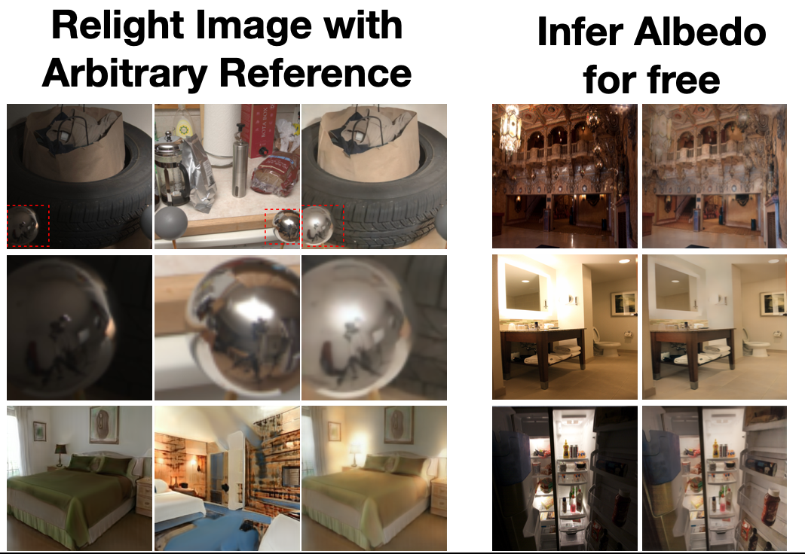

|
Xiao Zhang I'm a final-year CS Ph.D student at the University of Chicago, where I primarily work with Michael Maire on computer vision. During my Ph.D., I focused on unsupervised representation learning and generative models. My research aims to develop scalable algorithms for representation learning applicable to real-world scenarios and complex image/video generation. Before starting my Ph.D., I worked as a graduate research assistant with Jianbo Shi. |

|
Research |
|  |
Latent Intrinsics Emerge from Training to Relight
Xiao Zhang, Will Gao, Seemandhar Jain, Michael Maire, David Forsyth, Anand Bhattad In Submission, 2024 A relighting method that is entirely data-driven, where intrinsics and lighting are each represented as latent variables. Our approach produces SOTA relightings of real scenes. We show that albedo can be recovered from our latent intrinsics without using any example albedos, and that the albedos recovered are competitive with SOTA methods. |
|
Residual Connections Harm Self-Supervised Abstract Feature Learning
Xiao Zhang*, Roxie Jiang*, Will Gao, Rebecca Willett, Michael Maire In Submission, 2024 We show that incorporating a weighting factor to reduce the strength of identity shortcuts within residual networks significantly enhances semantic feature learning in the masked autoencoding (MAE) framework. This modification promotes low-rank representations at the bottleneck layers and increases the MAE linear probing accuracy on ImageNet from 67.8% to 72.8%.. |
|
|
Deciphering 'What' and 'Where' Visual Pathways from Spectral Clustering of Layer-Distributed Neural Representations
Xiao Zhang*, David Yunis*, Michael Maire CVPR, 2024 (Highlight) Code We introduce a method for examining the grouping information embedded in a neural network's activations, allowing for the extraction of spatial layout and semantic segmentation from the behavior of large pre-trained vision models. Our approach provides tools for a comprehensive analysis of the model's behavior across datasets. In the attention layers, we demonstrate that key-query similarity encodes scene spatial layout, while value vector similarity encodes object identity. |
|
|
Structural Adversarial Objectives for Self-Supervised Representation Learning
Xiao Zhang, Michael Maire In Submission, 2024 Code Within the framework of GANs, we propose objectives that task the discriminator for self-supervised representation learning via additional structural modeling responsibilities. Operating as a feature learner within the GAN framework frees our self-supervised system from the reliance on hand-crafted data augmentation schemes. |
|
|
Self-supervised Visual Representation Learning From Hierarchical Grouping
Xiao Zhang, Michael Maire NeurIPS, 2020 (Spotlight) Code We develop a framework for visual representation learning using a basic grouping capability. This grouping is implemented through a contour detector that divides an image into regions, which are then merged into a tree hierarchy. We train a self-supervised feature learning system by generating per-pixel embeddings that respect the hierarchical relationships between regions. |
|
|
Normalized diversification
Shaohui Liu* Xiao Zhang*, Jianqiao Wangni, Jianbo Shi CVPR, 2019 Code We introduce the concept of normalized diversity which force the model to preserve the normalized pairwise distance between the sparse samples from a latent parametric distribution and their corresponding high-dimensional outputs. The normalized diversification aims to unfold the manifold of unknown topology and non-uniform distribution, which leads to safe interpolation between valid latent variables. |
|
Template is borrowed from Jon Barron. |